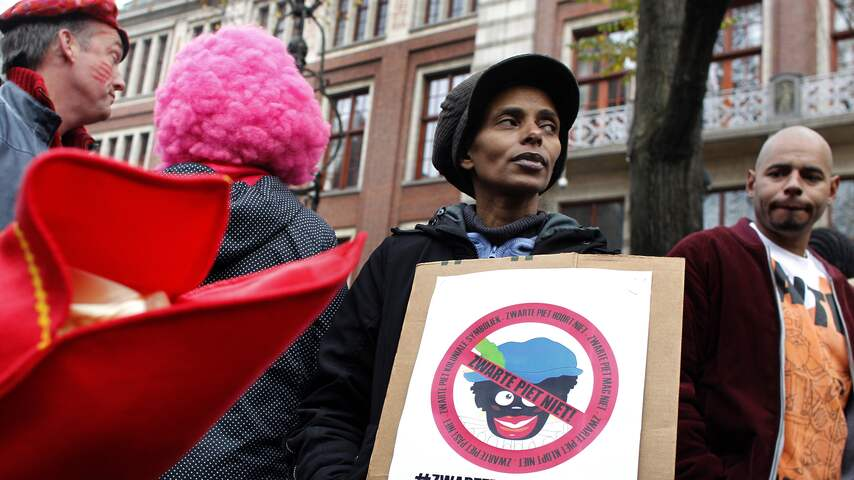
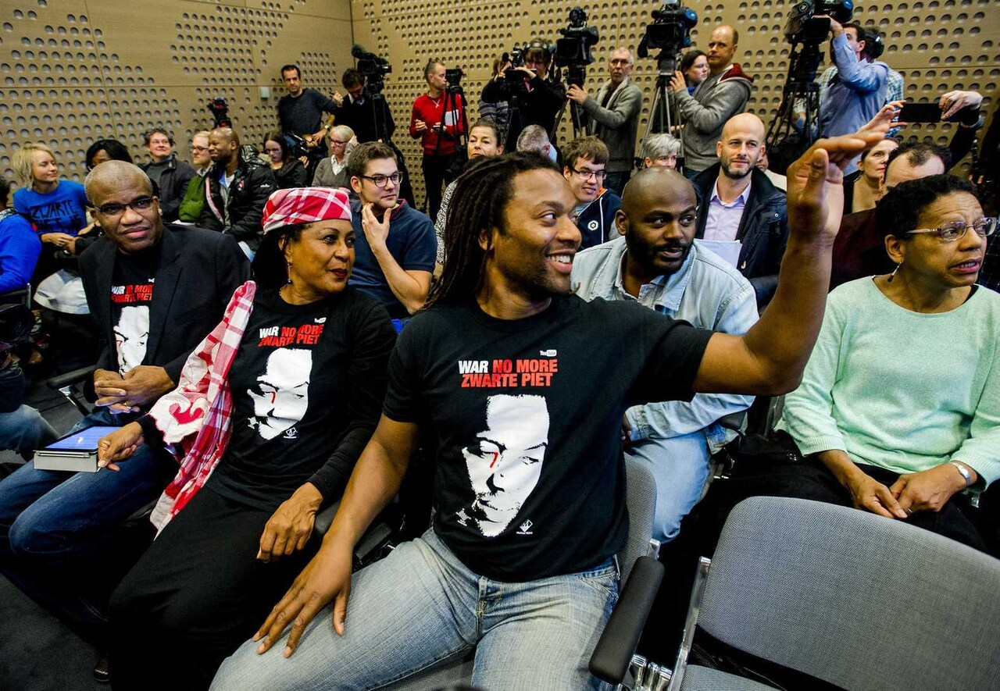
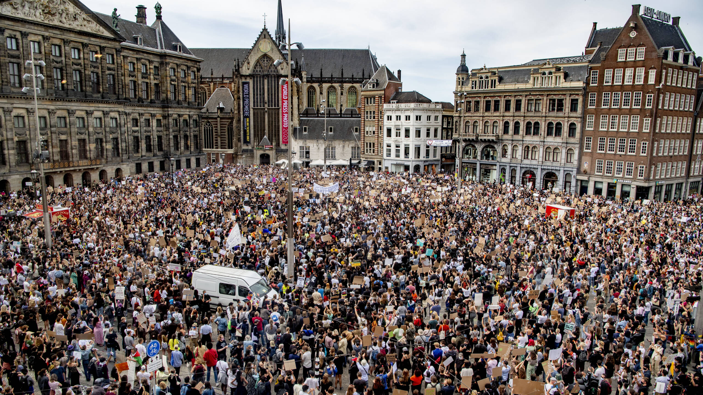
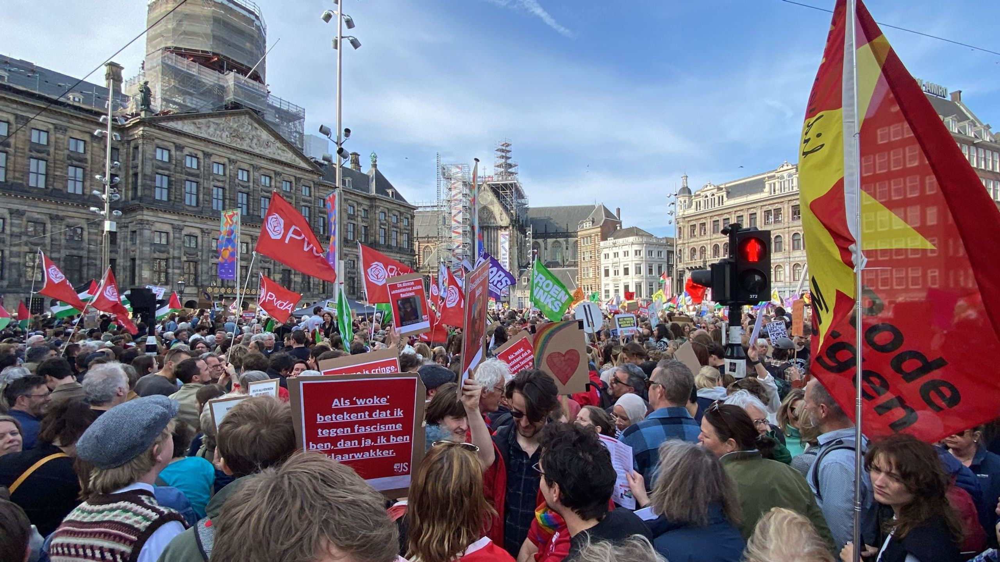

Zwarte Piet - Op de dam
Zwarte Piet is een traditionele figuur in de Nederlandse sinterklaasviering. In recente jaren is er veel discussie over deze figuur vanwege racistische connotaties. De beweging voor verandering roept op om af te stappen van deze traditie en voor meer inclusiviteit en respect voor alle gemeenschappen.
Klik op een jaar om meer te zien over wat er gebeurde
Tijdens de landelijke intocht in Amsterdam lopen een handjevol demonstranten met shirts met de tekst 'Zwarte Piet is Racisme' rustig richting de Dam. De sfeer slaat snel om wanneer ze hardhandig door de politie worden weggedragen en gearresteerd omdat ze geen vergunning hebben.
Dit was het absolute startschot van de moderne, zichtbare protestbeweging (met o.a. Jerry Afriyie en Quinsy Gario). Het leidde tot grote verontwaardiging over het politieoptreden.

Het protest verschuift naar de officiële intocht op de Dam. De discussie is inmiddels ontploft. De organisatie probeert te sussen door voor het eerst 'Witte Pieten' en 'Rode Pieten' mee te laten lopen, terwijl KOZP-demonstranten op de Dam met spandoeken staan tussen het feestvierende publiek.
Dit laat de eerste zichtbare twijfel en verandering in de traditie zien, hoewel de alternatieve Pieten destijds nog veelvuldig werden uitgejouwd.

Midden in een wereldwijde pandemie stromen onverwacht niet honderden, maar ruim 10.000 mensen naar de Dam. Ze staan schouder aan schouder. De aanleiding is een internationale antiracisme-golf, maar de Zwarte Piet-discussie staat centraal op de borden.
Het absolute kantelmoment. De schaal was zo gigantisch dat de politiek en grote bedrijven (zoals supermarkten en het Sinterklaasjournaal) diezelfde zomer nog besloten de traditionele Piet te vervangen door de Roetveegpiet.

De intocht trekt over de Dam. Er zijn amper nog protesten of ME-inzetten nodig, omdat de Roetveegpiet in Amsterdam inmiddels volledig de standaard is geworden. Het debat op het plein is nagenoeg verstomd.
Dit laat het 'eindpunt' (of de huidige status) van de transformatie op de Dam zien, waarbij de focus van de protesten is verschoven naar kleinere gemeenten buiten de Randstad.
